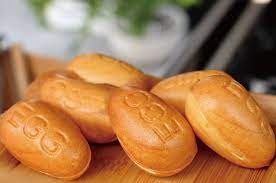

班級:餐三乙 姓名:廖子婷 學號:91034129
料理陳列展示
雞蛋糕食譜
材料：
- 低筋麵粉：200克
- 雞蛋：4顆
- 砂糖：150克
- 牛奶：50毫升
- 無鹽奶油：50克
- 泡打粉：1茶匙
- 香草精：1茶匙
步驟：
- 預熱烤箱至180°C。
- 將低筋麵粉和泡打粉混合過篩，備用。
- 將雞蛋打入大碗中，加入砂糖，使用電動攪拌器將其攪拌均勻。
- 在攪拌的過程中，慢慢加入牛奶和融化的無鹽奶油，繼續攪拌至順滑。
- 將過篩的低筋麵粉和泡打粉加入液體混合物中，用刮刀輕輕拌勻。
- 加入香草精，再次拌勻至順滑。
- 將麵糊倒入預備好的烤模中，放入預熱好的烤箱中，烤約25-30分鐘，或插入牙籤後取出時，牙籤上沒有附著麵糊即可。
- 取出後，待雞蛋糕冷卻後即可切片食用。

雞蛋糕典故
雞蛋糕，作為一種美味的糕點，背後有著一些有趣的典故。
寓意美好
雞蛋糕因其口感細膩、香甜可口，而在中國文化中被賦予吉祥、美好的寓意。人們常常把雞蛋糕作為慶祝喜慶場合的甜點，以象徵美好的未來和幸福的生活。
簡單傳統
製作雞蛋糕的食材簡單，製作過程也相對較簡單，因此雞蛋糕成為家庭烘焙的入門選擇。這種簡單傳統的製作方式，使得雞蛋糕在家庭中傳承和流傳。
節慶傳統
在一些節慶和慶典中，雞蛋糕也是不可或缺的一部分。例如，在中秋節和春節等重要節日，人們常常會烘焙或購買雞蛋糕，以分享和表達對家人、朋友的祝福。